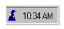
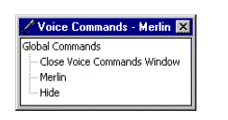
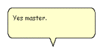
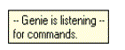
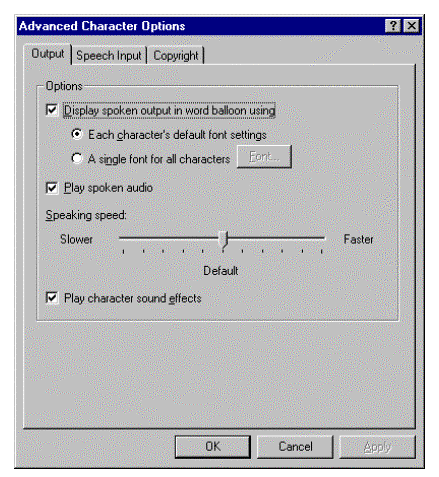
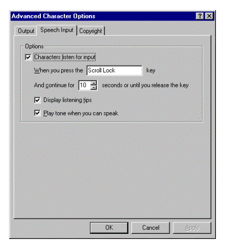
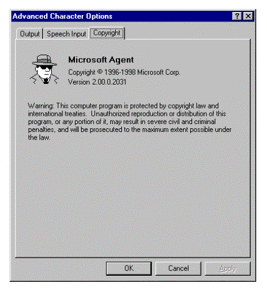
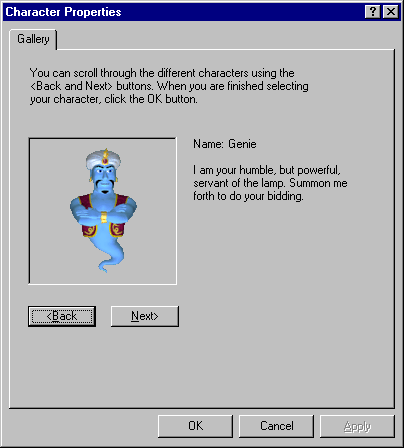

|
| ||
|
| ||
Microsoft Corporation
October 1998
 Download this document in Microsoft Word (.DOC) format (zipped, 44K).
Download this document in Microsoft Word (.DOC) format (zipped, 44K).
Contents
Introduction
The Character Window
The Character Taskbar Icon
The Voice Commands Window
The Word Balloon
The Listening Tip Window
The Advanced Character Options Window
The Default Character Properties Window
Microsoft Agent enables Web sites and conventional applications to include an enhanced form of user interaction. It provides several user interface components that enable users to access and interact with the character, know the character's status, and change global settings that affect all characters. This document describes these basic elements of the Microsoft Agent user interface.
Microsoft Agent displays animated characters in their own windows that always appear at the top of the window z-order (that is, always on top). A user can move a character's window by dragging the character with the left mouse button. The character image moves with the pointer. In addition, an application can move a character using the MoveTo method.
When the user right-clicks a character, a pop-up menu appears that displays the following commands:
Open | Close Voice Commands Window
Hide----------------------------
Command*
...
----------------------------
OtherHostingApplicationCaption**
...*Commands listed are based on the input-active client. For more information on defining commands that appear in the pop-up menu, see the Microsoft Agent Programming Interface Overview.
**Entries listed are all other applications currently hosting the character. For more information on defining this entry, see The Microsoft Agent Programming Interface Overview.
The Open | Close Voice Commands Window command controls the display of the Commands Window of the current active character. If speech recognition services are disabled, this command is disabled. If speech recognition services are not installed, this command does not appear.
The Hide command hides the character. The animation assigned to the character's Hiding state plays and hides the character. The letter "H" in hide is the command's access key (mnemonic).
The commands for the application(s) currently hosting the character follow the Hide command, preceded by a separator. Then the names of other applications using the character appear, also preceded by a separator.
If a character has been authored to include an icon, the icon appears in the notification area of the taskbar when Microsoft Agent runs. This icon provides access to the character's pop-up menu, which provides access to Agent's global commands such as those that hide and show the character.

Figure 1. The Character Taskbar Icon
Moving the pointer over the taskbar icon displays a tip window that reflects the name of the character (in the current language of the system). Single-clicking the character's taskbar icon displays the character. The action associated with double-clicking the icon depends on the current application controlling that character.
Right-clicking the icon displays a pop-up menu. When the character is visible, the pop-up menu displays the same commands as those displayed when right-clicking the character. If the character is hidden, only the Open (or Close) Voice Commands Window and Show commands appear.
If a compatible speech engine is installed, Microsoft Agent supplies a special window called the Voice Commands Window that displays the commands that have been voice-enabled for speech recognition. The Voice Commands Window serves as a visual prompt for what can be spoken as input (commands cannot be selected with the mouse).

Figure 2. The Voice Commands Window
The window appears when a user selects the Open Voice Commands Window command, either by speaking the command or right-clicking the character and choosing the command from the character's pop-up menu. However, if the user disables speech input, the Voice Commands Window is not accessible.
The Voice Commands Window displays voice-enabled commands as a tree. If the current hosting application supplies voice commands, they appear expanded and at the top of the window. Entries also appear for other applications using the character. The window also includes the global voice commands supplied by Microsoft Agent. If the current hosting application has no voice commands, the global voice commands appear expanded and at the top of the window.
The user can size and move the Voice Commands Window. Microsoft Agent remembers the last location of the window and redisplays it at that location if the user closes and re-opens the window. If the entries in the window exceed the current display size of the window, scroll bars appear.
In addition to spoken audio output, the Microsoft Agent interface supports textual captioning in the form of text output in cartoon-style word balloons. Words appear in the balloon as they are spoken. The balloon hides when spoken output is completed. The Advanced Character Options window provides options to disable the balloon's display as well as control attributes related to its appearance.

Figure 3. The Word Balloon
If speech is enabled, a special tooltip window appears when the user presses the push-to-talk key to begin voice input. The Listening Tip displays contextual information related to the current input state of Microsoft Agent. If compatible speech recognition has not been installed or has been disabled, the Listening Tip does not appear.

Figure 4. The Listening Tip
Microsoft Agent maintains certain global settings that enable a user to control interaction with all characters. The Advanced Character Options window displays these options and their current settings, and can be shown by any hosting application using the Microsoft Agent programming interface. Microsoft Agent remembers the last page viewed and displays that page when the property sheet appears.
This page includes properties that control character output. For example, the user can determine whether to display output in the word balloon, determine how balloon output should appear, play spoken output as audio, play character sound effects, display the restart prompt, and adjust the speaking speed.

Figure 5. Output Property Page
A user can adjust speech input options on this property page. The user can disable speech input, set the listening input key, choose whether to display the Listening Tip window, and choose to play a MIDI tone to indicate when speech input is available.

Figure 6. Speech Input Property Page
This page displays the copyright and version information for Microsoft Agent.

Figure 7. Copyright Page
In addition to enabling applications to load a specific character, applications can load a character that is a shared resource for the user, known as the default character. The default character is accessible from any application, but the character is only selectable by the user. To facilitate selection of this character, Agent provides a window that provides access to selecting this character, called the default character properties window. Access to this window is supported from the Agent API.

Figure 8. Default Character Properties Window
The default character properties window cannot be used to provide character selection other than for the default character.
Did you find this material useful? Gripes? Compliments? Suggestions for other articles? Write us!
© 1999 Microsoft Corporation. All rights reserved. Terms of use.